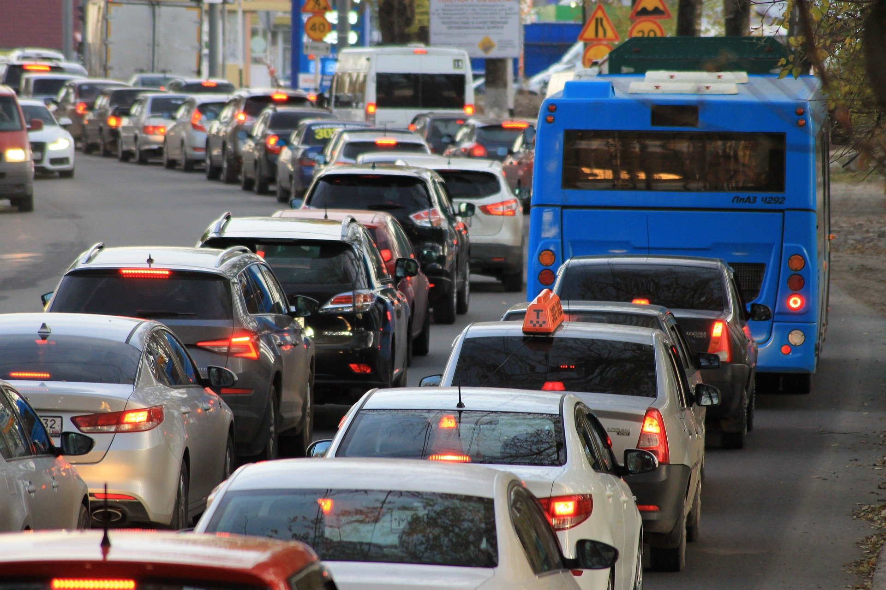

مرحبا بكم في مبادرة تقليل بصمتك
الحقائق
بصمة ثاني أكسيد الكربون للفرد
- يصدر الشخص في جميع أنحاء العالم حوالي 4.8 طن من ثاني أكسيد الكربون كل عام.
- لدول المتقدمة: في الولايات المتحدة الأمريكية، المتوسط هو وتبلغ البصمة الكربونية للشخص الواحد نحو 16.5 طن من مكافئ ثاني أكسيد الكربون سنوياً، بينما ويبلغ حوالي 7.2 طن من ثاني أكسيد الكربون في الاتحاد
- بمعدل 1.9 طن من ثاني أكسيد الكربون سنويًا. البلدان النامية: في الهند، تكون البصمة الكربونية لكل شخص
صادر انبعاثات ثاني أكسيد الكربون
- نتاج الطاقة: مسؤول عن حوالي 73% من الإنتاج العالمي انبعاثات غازات الاحتباس الحراري. الوقود الأحفوري (الفحم والنفط والغاز).
- قل: يسبب حوالي 14% من انبعاثات ثاني أكسيد الكربون العالمية.
- لصناعة: تسبب حوالي 21% من انبعاثات ثاني أكسيد الكربون العالمية، بشكل رئيسي من خلال إنتاج الصلب والأسمنت و
- لزراعة والغذاء: تساهم بحوالي 19% من الإنتاج العالمي انبعاثات CO2. تربية الماشية وزراعة الأرز مهمة
- نفايات ومياهCO2 الصرف الصحي: مسؤولة عن حوالي 3% من النفايات العالمية
التأثير على المناخ
- لاحتباس الحراري: منذ بداية الثورة الصناعية ارتفع متوسط درجة الحرارة العالمية بنحو 1.2 درجة
- رتفاع مستوى سطح البحر: ارتفع مستوى سطح البحر بنحو 20 درجة منذ عام 1900 سم ومن المتوقع أن يرتفع بشكل أكبر بحلول عام 2100
- الأحداث الجوية المتطرفة: تواتر وشدة موجات الحر والجفاف والفيضانات والأعاصير
اسهام

التنقل
طاقة

استهلاك

مشاريعنا
تم تحرير النص الكامل لصفحة الويب بواسطة انشاء
تبرّع
أعزائي المؤيدين، إن تأثير يتم الشعور بتغير المناخ في جميع أنحاء العالم - الظواهر الجوية المتطرفة ، ذوبان الأنهار الجليدية وارتفاع منسوب مياه البحر يهددان بيئتنا وسبل عيش الأجيال القادمة. ولكن معا يمكننا أن نحدث فرقا ونحدث فرقا لكوكبنا حمى. لقد كنا ملتزمين بشغف ب حماية المناخ. بواسطة إنوفيتي
صاحب الحساب: فريدريك هارتمان رقم الحساب المصرفي الدولي: DE89 3704 0044 0532 0130 00 BIC: COBADEFFXXX الغرض: "التبرع بحماية المناخ"
>أنحاء العالم - الظواهر الجوية المتطرفة ، ذوبان الأنهار الجليدية
وارتفاع منسوب مياه البحر يهددان بيئتنا ChatGPT أنحاء العالم